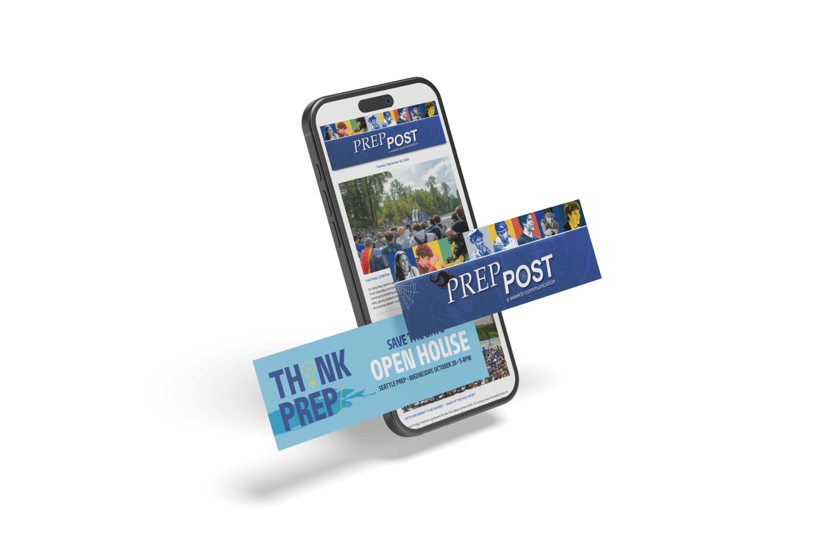

Panther Tracks
Writing, photography, and production for Seattle Prep’s annual alumni and community magazine.
Multi-disciplinary communicator who crafts narratives that activate, engage, and connect.
Writing, photography, and production for Seattle Prep’s annual alumni and community magazine.

A refreshed Alumni Week identity brought to life across print, web, and digital communications.

An integrated admissions campaign, print design, and content built around THINK PREP!

Platform-specific content strategy, community storytelling, and analytics-informed social media management.

Editorial planning, writing, and production of Seattle Prep’s weekly community newsletter.